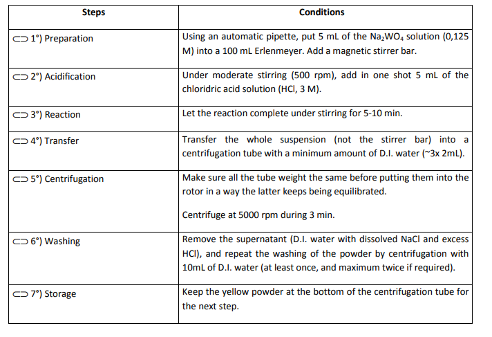
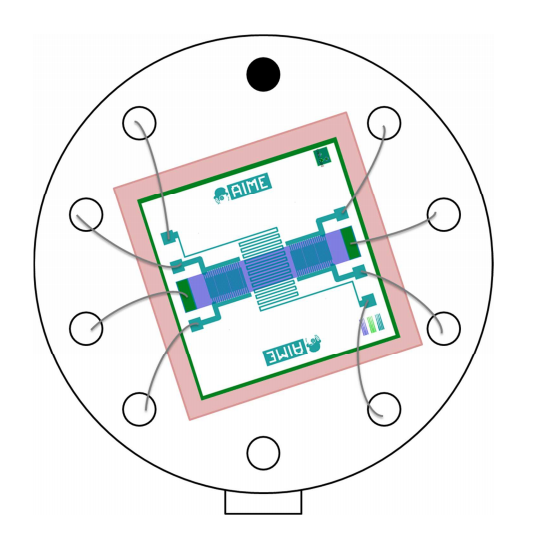
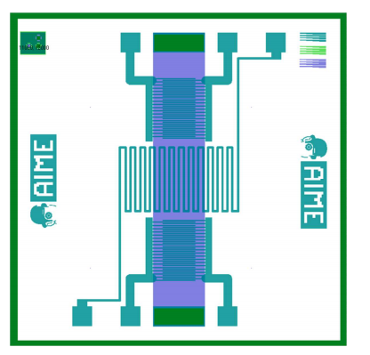
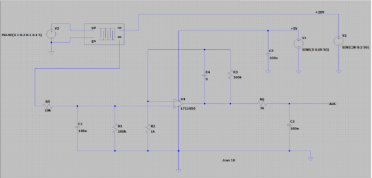
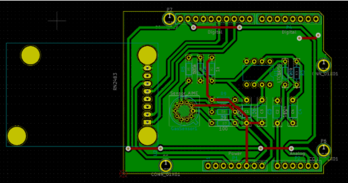
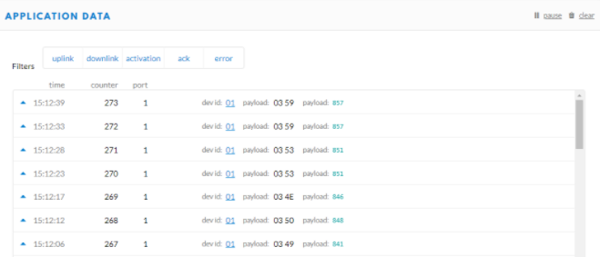
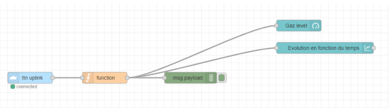
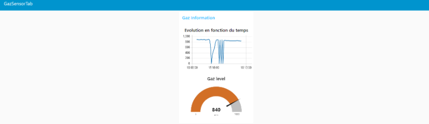

In this project, we designed a nanoparticle sensor starting from the synthesis of WO3 nanoparticles. We have characterized the sensor produced under different gaseous atmospheres. The final objective was to produce a datasheet.
The Datasheet is avaible here :
Datasheet
To prepare the solution containing the nanoparticles, we started with a hydrolysis-condesation of Na2WO4 solution. We followed the protocol (below) under safety rules to avoid any risks (due to the use of nanoparticles). In addition, the protocol tended to limit the ecological impact as much as possible, mainly by limiting the waste produced.
The sensor is made up of 3 parts: a doped poly-silicon heating resistor, an aluminum resistance for heating and two interdigitated combs where the layer of nanoparticles will be deposited and which will then become our resistors sensitive to the gaseous environment.
For the integration of nanoparticles into the sensor, we used Dielectrophoresis (DEP) method. We connect the sensor and we apply a non-uniform electric field on a dielectric particle. Consequently, fields of a particular frequency can manipulate particles with great selectivity and our particles will, thanks to the dielectrophoretic force, integrate on the comb. This method last for a minute and we then can see the result on the microscope.

Once our nanoparticle sensor was ready, we characterized it. First, we measured the resistance values of the sensor using Ohm's law. We obtained different curves (available in the datasheet).
Subsequently, we recorded the response of the gas sensor. We measured the variation of the sensitive layer in the presence of a specific gas at one given concentration in synthetic dry air by following a protocol established to test the response and regeneration thereof. We used two gases which are ethanol and ammonium. The characterization procedure was designed to alternate dry air and air with the desired gas.
The procedure can be seen below:
The sensor having a very large resistance does not allow direct measurement of the signal having a current of 100 nA. In order to have a usable signal, we need a conditioning stage. Our conditioner will aim to amplify the signal while filtering the noise. We have produced and tested the following conditioner under LTSpice:
Then come the shield design. After having tested and validated the conditioner, we went to the shield. We will be using KiCad to create the PCB. KiCad is a software that allows us to perform routing and visualize the final result in 3D. We integrate our conditioner on KiCad in addition to adding the RN2483 and the arduino uno for data communication.

We needed our gas sensor to be able to communicate in order to be used in an IoT environment. We are going to use an Aruino nano coupled to an RN2483 chip for communication. After soldering and connecting the pins, and with the help of TheThingsNetwork (TTN) library our board was able to communicate and send measurements to the TTN site at regular intervals.

When developing the diagram, we took into account the energy consumption. As our sensor only had to send data at certain times, it was not necessary to power the card continuously. We therefore used a transistor in order to optimize consumption and to supply the card only when sending data.
We needed our gas sensor to be able to communicate in order to be used in an IoT environment. We are going to use an Aruino nano coupled to an RN2483 chip for communication. After soldering and connecting the pins, and with the help of TheThingsNetwork (TTN) library our board was able to communicate and send measurements to the TTN site at regular intervals.
When developing the diagram, we took into account the energy consumption. As our sensor only had to send data at certain times, it was not necessary to power the card continuously. We therefore used a transistor in order to optimize consumption and to supply the card only when sending data.
We used node-red to create a dashboard that allows us to record the measurements and display them in a simple interface. So, on node-red, we realized the flow we wanted to make, starting from a payload reception (ttn uplink), a 'decoding' function, and then a display in the dashboard.


By following the course on sensors, we were introduced to several concepts such as passive and active sensors and other theoretical knowledge. Then by designing a gas sensor from start to finish, we were able to understand the concepts related to the sensor.
By following the different stages of creation, starting from the synthesis of nanoparticles up to its integration on the chip, we have created our own nanoparticle gas sensor during our sessions at AIME.
We went through the different parts of a datasheet during our course on sensors. Thanks to this, we were able to develop a technical sheet of the sensor manufactured by integrating the interesting information necessary for its handling.
Thanks to previous work during our studies, we were used to using microcontrollers. This year, we were introduced to Arduino. Thanks to the project carried out in MOSH we were able to understand their operation and could use them in good conditions.
We have carried out the complete chain between the output signal of our sensor and the microcontroller through the conditioner. The entire chain produced responds to various constraints in order to integrate the sensor into a data acquisition system. Through this process, we learned to carry out an acquisition chain
We have made a circuit on LTSpice in order to simulate the behavior of the sensor in a gaseous environment. We have evolved the conditioner to meet the needs and ensure a correct signal.
We designed a shield to accomodate the gas sensor on KiCad. This process wasn't new to me thanks to my past experience (Study and Internship). It was a good wake-up call that allowed me to ensure my control over this area.
We have, using Node-red, been able to retrieve the sensor information and display them in a dashboard.
We were able to link every part of what we have done in this teaching unit into a smart device. Starting from the gas sensor, we developed using arduino and the RN2483 chip, a communicate device. And finaly, with NodeRed we created an HMI and displayed the data of our sensor.
© Copyrights Instant. All Rights Reserved